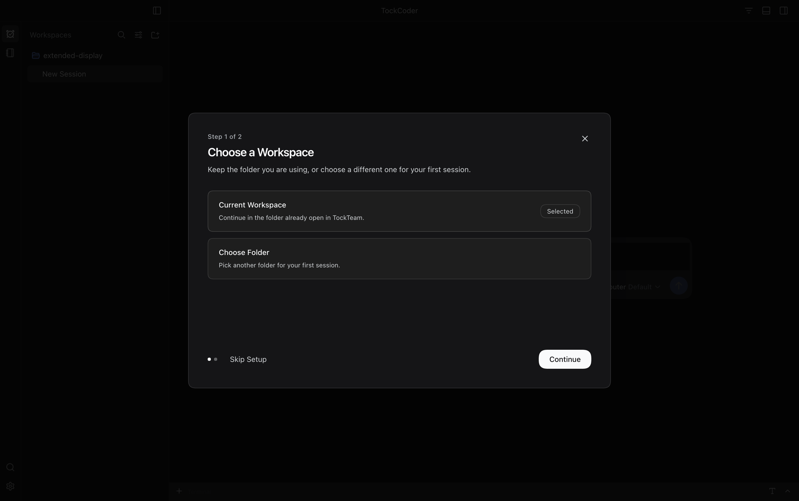
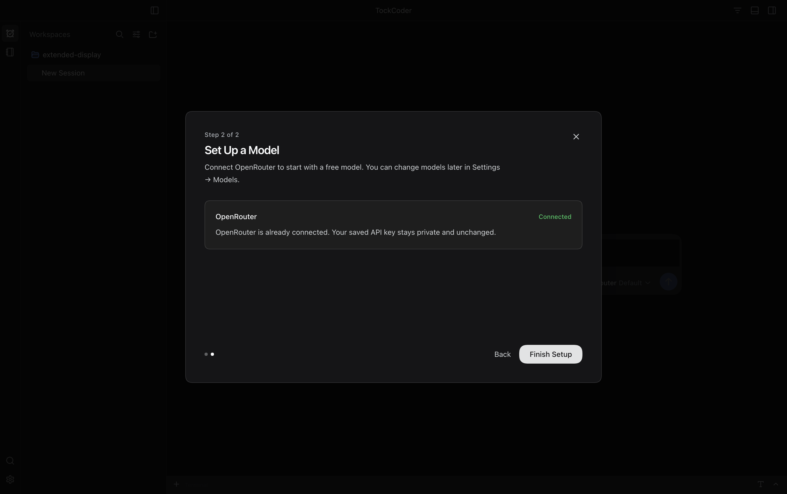
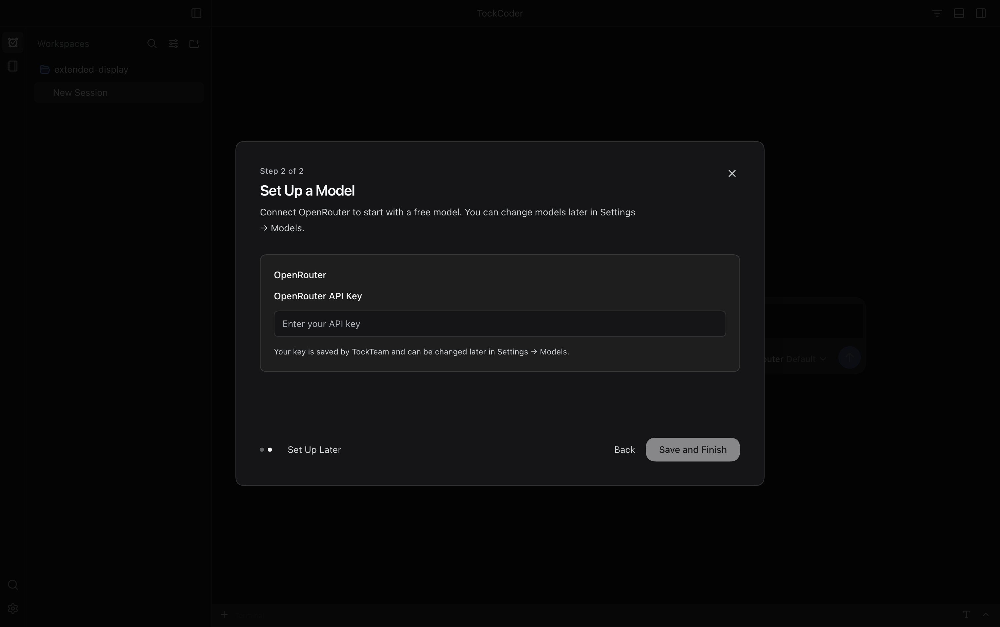

01 · Choose a Workspace
Step 1 of 2 · September 27, 2026
02 · Model Already Connected
Step 2 of 2 · Returning Profile
02 · Add a Model Key
Step 2 of 2 · New Profile
Two practical steps: choose a workspace, then set up a model. A returning profile sees its saved key as connected without displaying or replacing it. These are real Desktop captures from an isolated test profile; your settings were not changed. Click any image to view it at full resolution.
1512 × 949 CSS Pixels · 2× Scale · 3024 × 1898 PNG · Built-In Dark Theme · No Active Skin


